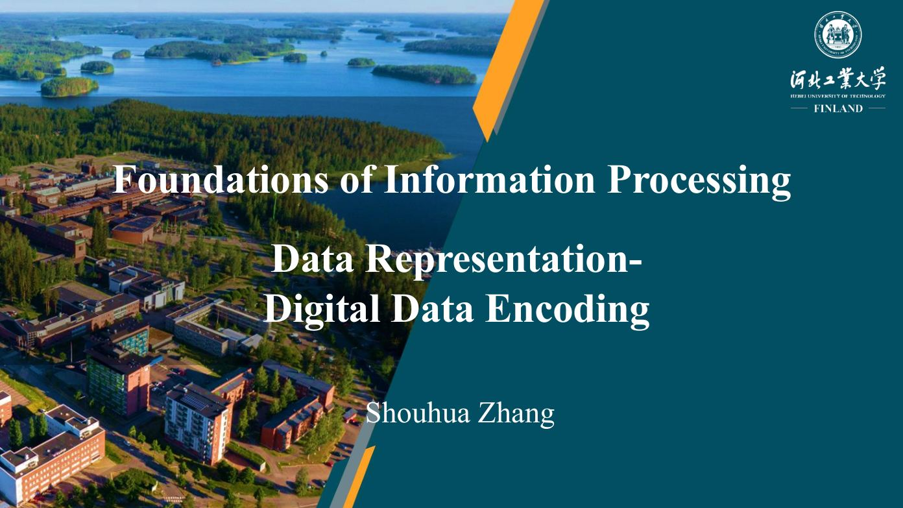

HDD5020 信息处理基础（计算机导论） · 第 03 / 12 讲
Week 3 · 有符号数、补码、溢出与 IEEE 754
Signed Integers, Two's Complement and Floating Point
所属章节：第 2 章 数制与数据表示
资料来源 · 2 项 / 已附 0 项
Week3- Digital Data Encoding/Lecture3.pdf未附原文件Week3- Digital Data Encoding/Exercise 2.pdf未附原文件
未附文件仅列原始名称；版本与核对日期由维护者登记。
本节定位
上一讲解决了「正整数怎么写」。可现实里的数据有负数（温度 −5 ℃）、有小数（价钱 12.625）。这一讲补上这两块：先用符号位与补码把负数塞进固定位宽，再用IEEE 754把小数塞进去。
为什么补码是本周的核心？因为它把「减法」变成了「加法」。计算机没有减法器，只有一个加法器；把 −B 写成 B 的补码，A − B 就变成 A + (−B)，一次加法就够。这条设计至今仍是所有 CPU 的做法（x86、ARM、RISC-V 全都如此）。
本讲的三块内容层层递进：补码解决「整数带符号」，定点/浮点解决「小数」，IEEE 754 解决「不同机器之间怎么交换小数」。学完这一讲，你看到 0xC1480000 这种十六进制串，就能反推它代表的浮点数。
学完本讲你应当能够：
- 用 8 位写出一个整数的原码、反码、补码三种形式
- 说明补码为什么能消除「双零」，并写出 n 位的表示范围
- 做补码加法与减法，正确丢弃最高位的进位
- 按两条规则判断溢出，并用 Cin 与 Cout 的异或验证
- 把二进制小数转成十进制，把十进制小数用乘 2 取整法转成二进制
- 按五步把十进制实数编码成 32 位 IEEE 754 单精度
- 从 32 位十六进制串反解出它代表的十进制实数
- 说明浮点加法为什么要先对齐指数，以及精度误差从哪来
一、问题：硬件里没有负号
1.1 日常做法与硬件限制
日常生活里我们用 + 和 − 两个符号表示正负。但课件指出硬件限制：计算机只懂 0 和 1，内存里没有物理的负号。
1.2 符号位方案
解决办法是把最高位（Most Significant Bit，MSB，最左边那一位）征用为符号位：
| 符号位 | 含义 |
|---|---|
| 0 | 正数（+） |
| 1 | 负数（−） |
课件明确约定：本讲所有例子都按 8 位字长讨论。这个约定很重要——同一个二进制串在 8 位与 16 位下的值不同，考试若不写位宽，按 8 位处理并注明。
注意符号位占掉了最高位，于是「数值部分」只剩 7 位。8 位能表示 2^8 = 256 种模式，但其中一半要分给负数，这就是后面所有「范围」计算的出发点。
二、符号-数值表示（Signed-Magnitude）
2.1 定义
课件称它为最简单的编码：MSB 是符号位，其余位表示绝对值（magnitude）。
2.2 八个例子
+5 = 0000 0101
-5 = 1000 0101
+13 = 0000 1101
-13 = 1000 1101规律一目了然：负数只是把最高位从 0 改成 1，低 7 位与正数完全相同。人读起来非常直观。
2.3 两个致命缺点
课件列了两条，它们决定了这个方案不能用于整数运算：
（1）零有两种写法。+0 = 0000 0000，-0 = 1000 0000。这既浪费了一个二进制状态（256 个模式里只有 255 个不同的值），又让比较逻辑变复杂——判断「是否为零」要检查两种模式。
（2）算术复杂。加法和减法需要不同的硬件电路。原因是符号位与数值位混在一起：5 + (−3) 不能直接把两个 8 位模式相加，硬件必须先比较符号，再决定是做加法还是减法、结果取谁的符号。
1000 0101 + 0000 0011 会得到 −2。按符号-数值直接相加得 1000 1000，即 −8，完全错。这正是要引入补码的理由。三、过渡方案：反码（Ones Complement）
课件把它称为「垫脚石」：在解决硬件问题之前先引入反码。
3.1 规则
| 数 | 规则 |
|---|---|
| 正数 | 与符号-数值表示完全相同，例如 +5 = 0000 0101 |
| 负数 | 符号位保持 1，其余数值位逐位取反（0→1，1→0） |
3.2 算例
+5 的符号-数值：0000 0101
-5 的反码： 1111 1010做法：先写 +5 的 7 位数值 000 0101，逐位取反得 111 1010，前面加符号位 1 → 1111 1010。
3.3 仍然存在双零
课件指出：反码依然有两个零，+0 = 0000 0000、-0 = 1111 1111。所以它只是过渡，不是终点。
但反码并没有被淘汰：网络协议里的校验和（IPv4、TCP、UDP 的 Internet checksum）至今仍用「反码和」，因为它有一个方便的性质——把进位折回最低位就能得到结果。这一点在第九节的应用表里会再出现。
四、工业标准：补码（Two's Complement）
4.1 为什么选它
课件给了三条理由：几乎所有现代计算机都用它；它解决了「双零」问题；它把加法与减法统一成单一硬件电路（加法器）。
4.2 规则
| 数 | 规则 |
|---|---|
| 正数 | 与符号-数值表示完全相同 |
| 负数 | 反码 + 1 |
| 负数的等价规则 | 全部位取反，再加 1 |
注意第二条与第三条的差别：反码 + 1 是「数值位取反后加 1」，全位取反再加 1 是「连符号位也取反后加 1」。对 8 位而言两种做法结果相同（因为符号位取反再加 1 会自然回到 1 附近），但考试通常按第一条写。
4.3 两个算例
求 −5（8 位）：
- 写 +5：0000 0101
- 全部取反：1111 1010
- 加 1：1111 1011
- 结果：−5 = 1111 1011
求 −32（8 位）：
- 写 +32：0010 0000
- 全部取反：1101 1111
- 加 1：1110 0000
- 结果：−32 = 1110 0000
4.4 反向验证：给一个补码串，怎么读出它是多少
若最高位是 0，直接按无符号数读。若最高位是 1，则它是负数，值为 原串按无符号读 − 2^n。例：1111 1011 无符号读是 251，251 − 256 = −5。
这个方法比「取反加一再读」更快，也更能说明补码的本质：它就是「把 2^n 当作 0」的环形计数器。这个视角在第八节讲溢出时非常有用。
五、可表示的范围（以 8 位为例）
5.1 原码的范围
因为补码消除了 −0，我们多得到一个负数。课件先把两种方案的 8 位范围并列：
| 编码 | 8 位范围 | 不同值的个数 | 零的个数 |
|---|---|---|---|
| 符号-数值 | −127 到 +127 | 255 | 2（+0 与 −0） |
| 补码 | −128 到 +127 | 256 | 1 |
5.2 补码的边界值
课件把三个关键值写得很清楚：
最大正数：0111 1111 = +127
零： 0000 0000 = 0
最大负数：1000 0000 = -128为什么 1000 0000 是 −128 而不是 −0？用第 4.4 节的算法：无符号读是 128，128 − 256 = −128。也就是说这个模式在补码里被「推」到了环的另一端。
5.3 公式
n 位补码范围 = [−2^(n−1), 2^(n−1) − 1]
| 位宽 n | 范围 | 值的个数 2^n |
|---|---|---|
| 4 | −8 到 +7 | 16 |
| 8 | −128 到 +127 | 256 |
| 16 | −32 768 到 +32 767 | 65 536 |
| 32 | −2 147 483 648 到 +2 147 483 647 | 约 42.9 亿 |
这条公式的价值在于「不对称」：负数比正数多一个。原因就是零只有一个模式，省下来的那个模式给了 −2^(n−1)。凡是「范围内最多能表示多少」的题，先写这条公式再算。
六、补码加法
6.1 黄金规则
课件称它为 the Golden Rule：把两个二进制数逐位相加，符号位一起参与，最高位（MSB）产生的进位直接丢弃。
注意「符号位一起参与」这六个字：这是补码与符号-数值最本质的差别。符号位不是特殊位，它只是最高位，跟着一起加。
6.2 算例：14 + 9
+14: 0000 1110
+ 9: 0000 1001
和 : 0001 0111低 4 位 1110 + 1001 = 1 0111，向高 4 位进 1，高 4 位 0000 + 0000 + 1 = 0001。结果 0001 0111 = 23，正确。
6.3 算例：−5 + 3（复习负数加法）
-5 : 1111 1011
+3 : 0000 0011
和 : 1111 1110读结果：无符号 254，254 − 256 = −2，正确。这里没有产生 MSB 进位，无需丢弃。
七、补码减法
7.1 黄金规则与公式
课件原话：计算机不做减法，它加负数（"Computers do not subtract. They add negative numbers."）。公式是：
A − B = A + (−B)
步骤只有两步：先求 B 的补码（得到 −B），再把 A 与 −B 相加。
7.2 算例：7 − 4
+7 : 0000 0111
-4 : 1111 1100
加 : (1) 0000 0011产生了一位 MSB 进位，按规则丢弃，得 0000 0011 = +3，正确。
注意这个「丢弃」不是错误：补码的算术是模 2^8 的算术，多出来的那一位正好等于 256，而 256 ≡ 0（mod 256）。
7.3 算例：−5 − (−3)
课件并列了两种做法，结果相同，这正好证明「减法 = 加负数」：
加法： 1111 1011
+ 0000 0011
-----------
1111 1110
减法： 1111 1011
- 1111 1101
-----------
1111 1110两种做法都得到 1111 1110，即 −2。减法竖式之所以能直接做，是因为补码的借位与加法一致；但从硬件角度，减法竖式并不存在——只有加法器。
八、溢出
8.1 定义与类比
课件定义：当计算结果太大（或太小）以至于装不进分配的位数时，就发生溢出（overflow）。类比是「把 1 升水倒进 500 毫升的杯子」。
以 8 位补码为例：最大正数是 +127。若算 100 + 50，数学结果是 150，150 装不进 8 位 → 溢出。
8.2 两条判断规则
课件给了两条规则，第一条是很强的「不会发生」结论：
规则 1：符号不同的两个数相加（正 + 负）永远不会溢出。
规则 2：溢出只在两种情形发生——正 + 正 = 负结果；负 + 负 = 正结果。
为什么规则 1 成立？因为「正 + 负」的结果一定落在两个操作数之间，必然在范围内。这个结论能省下大量检查：只有同号相加才需要判溢出。
8.3 正溢出算例：+100 + (+50)
+100: 0110 0100 (符号位 0)
+ 50: 0011 0010 (符号位 0)
和 : 1001 0110课件分析：运算从数值位向符号位产生了一次进位，符号位由 0 翻成 1。CPU 现在把它读成负数：1001 0110 无符号 150，150 − 256 = −106。答案是错的。
8.4 负溢出算例：−100 + (−50)
-100: 1001 1100 (符号位 1)
- 50: 1100 1110 (符号位 1)
和 :[1] 0110 1010 （最左边的 1 超出 8 位，丢弃）剩下的 8 位以 0 开头，CPU 读成正数：0110 1010 = +106。同样是错的。注意这里「丢弃了进位」却不是正常情况——这正是下一小节要区分的地方。
8.5 硬件怎样检测溢出
课件给了两种方法：
方法 1（符号位逻辑）：若 Sign(A) == Sign(B) 且 Sign(结果) ≠ Sign(A)，则溢出为真。
方法 2（双进位异或）：看进入符号位的进位 C_in 与从符号位出去的进位 C_out；若二者不相等（异或为 1），则发生溢出。
方法 2 是硬件实际采用的方式，因为它只要两个进位信号做一次异或，不需要比较符号。这也是考试里最爱考的「用 Cin 与 Cout 判断」。
8.6 溢出与正常进位的区别
课件专门用 −14 + (−9) 提醒不要混淆：
-14: 1111 0010
- 9: 1111 0111
和 :[1] 1110 1001检查：C_in（进入符号位）= 1，C_out（离开符号位）= 1，两者相等 → 没有溢出。被丢弃的 [1] 只是正常进位。结果 1110 1001：无符号 233，233 − 256 = −23，完全正确（−14 + −9 = −23）。
九、二进制小数转十进制
9.1 位权变成负指数
课件用位置加权的思路直接类比：十进制的十分位是 10^(−1) = 0.1、百分位是 10^(−2) = 0.01；二进制的小数位就是 2^(−1) = 0.5、2^(−2) = 0.25、2^(−3) = 0.125。
| 小数位 | 位权 | 十进制值 |
|---|---|---|
| 第 1 位 | 2^(−1) | 0.5 |
| 第 2 位 | 2^(−2) | 0.25 |
| 第 3 位 | 2^(−3) | 0.125 |
| 第 4 位 | 2^(−4) | 0.0625 |
| 第 5 位 | 2^(−5) | 0.03125 |
规则很简单：每一位二进制数字乘以它的位权，再全部相加。
9.2 两个算例
例 1：0.11₂
1 × 2^(-1) + 1 × 2^(-2) = 0.5 + 0.25 = 0.75₁₀例 2：10.011₂
整数部分 10₂ = 2₁₀；小数部分 0 × 0.5 + 1 × 0.25 + 1 × 0.125 = 0.375；合计 2.375₁₀。
这个「整数与小数分开算再合并」的做法在后面 IEEE 754 编码时还要用一次，务必熟练。
十、十进制小数转二进制：乘 2 取整法
10.1 四步规则
- 把小数部分乘以 2
- 记下整数部分（0 或 1），它就是这一位的二进制数字
- 用新的小数部分再乘 2
- 重复到小数部分为 0（或达到位数上限），结果从上往下读
「从上往下读」是关键：第一次乘出来的整数是最高位（紧挨着小数点右边第一位）。这与整数部分的「除基取余要逆序读」正好相反，两件事别搞混。
10.2 算例：0.375
0.375 × 2 = 0.750 → 记 0（最高位）
0.750 × 2 = 1.500 → 记 1
0.500 × 2 = 1.000 → 记 1（小数部分为 0，停止）自上而下读：0.011₂。验算：0.25 + 0.125 = 0.375，正确。
10.3 算例：0.8125
0.8125 × 2 = 1.6250 → 记 1（最高位）
0.6250 × 2 = 1.2500 → 记 1
0.2500 × 2 = 0.5000 → 记 0
0.5000 × 2 = 1.0000 → 记 1（停止）结果 0.1101₂。验算：0.5 + 0.25 + 0.0625 = 0.8125，正确。
10.4 算例：0.1 的无限循环
课件用 0.1 展示了「转不干净」的情形：
0.1 × 2 = 0.2 → 0
0.2 × 2 = 0.4 → 0
0.4 × 2 = 0.8 → 0
0.8 × 2 = 1.6 → 1
0.6 × 2 = 1.2 → 1
0.2 × 2 = 0.4 → 0 （回到第 2 步，开始循环）结果是 0.0001100110011…₂，无限循环，周期为 4（0011 反复出现）。
0.1 + 0.2 ≠ 0.3。所以在程序里绝不要用 == 比较两个浮点数，要比较它们的差的绝对值是否小于某个容差（如 1e−9）。10.5 顺便记住几个「转不干净」的数
二进制只能精确表示「分母是 2 的幂」的分数（0.5、0.25、0.125、0.375…）。0.1、0.2、0.3、1/3 这类分母含 5 或 3 的数都转不干净。这条判据能让你一眼看出题目会不会出现无限循环。
十一、定点数与浮点数
11.1 定点数的问题
课件把两种方案对立起来讲。定点数（fixed-point）把小数点固定在某个位置，例如 4 位给整数、4 位给小数。问题是：它无法同时表示很大的数和很小的数。8 位定点只能表示 0 到 15.9375（步长 1/16），既装不下 100000，也装不下 0.0001。
11.2 浮点数的思路
浮动点数（floating-point）基于科学记数法：
(−1)^S × M × 2^E
小数点随着指数 E 浮动：E 大就把小数点往右推（表示大数），E 小就往左推（表示小数）。于是有限的 32 位既能表示 10^38 量级，也能表示 10^(−38) 量级。代价是「精度随数值大小变化」——大数附近的间隔大，小数附近的间隔小。
十二、IEEE 754 单精度（32 位）
12.1 三段布局
| 字段 | 位数 | 含义 |
|---|---|---|
| 符号位 Sign | 1 位 | 0 = 正，1 = 负 |
| 指数 Exponent | 8 位 | 存储时加偏置 127（存储值 = 实际指数 + 127） |
| 尾数 Mantissa | 23 位 | 有效数字的位，小数点前的那个 1 被隐藏（hidden 1）以省空间 |
三段相加：1 + 8 + 23 = 32。
12.2 为什么指数要加偏置
实际指数可以是负数（表示很小的数），但 8 位字段本身是无符号的。加 127 之后，−126 … +127 被平移成 1 … 254，全是正数，比较大小与运算都方便。极端值 0 与 255 被留作特殊用途（见第十四节），所以正常数的存储指数范围是 1–254。
12.3 隐藏前导 1
规格化之后，任何非零数都能写成 1.xxxxx × 2^n，小数点前那位永远是 1。既然是「永远」，就不必存它——省下 1 位，等于把有效精度从 23 位提高到 24 位。这个 1 叫 hidden 1（隐藏位），解码时要记得补回来。
12.4 编码 −5.75 的五步
课件用它做完整示范：
- 转二进制：−5.75 = −101.11₂（5 = 101，0.75 = 0.11）
- 规格化：把小数点移到第一个 1 之后 → −1.0111 × 2^2
- 定符号：负数，符号位 = 1
- 算指数：实际指数 2，加偏置
2 + 127 = 129，129₁₀ =1000 0001 - 取尾数：小数点后是 0111，丢掉隐藏的 1，后面补 0 到 23 位 →
0111 0000 0000 0000 0000 000
拼起来：
1 10000001 01110000000000000000000
符号 指数 尾数按 4 位一组写成十六进制：1100 0000 1011 1000 0000 0000 0000 0000 → 0xC0B80000。交作业写十六进制更简洁，也便于核对。
12.5 反向解码的四步
- 把 32 位按 1 / 8 / 23 切开
- 符号位决定正负
- 指数减 127 得到实际指数 n
- 尾数前面补 1.（隐藏位），得到 1.xxxxx，再乘 2^n，最后转十进制
十三、浮点加法：四步
课件把 CPU 做浮点加法的过程拆成四步：
- 对齐指数（align exponents）：把指数较小的那个数的尾数右移，直到指数与大的一致
- 相加尾数（add mantissas）：现在可以逐位加了
- 规格化（normalize）：把结果调回
1.xxxxx × 2^n的形式 - 舍入（round）：截到 23 位，这一步会丢精度
课件给了一个十进制类比：算 1.2 × 10^3 + 3.0 × 10^1，要先把后者改写成 0.03 × 10^3，再相加。
13.1 完整算例：9.5 + 7.0
Step 1 转二进制科学记数法：
A = 9.5 = 1001.1₂ → 1.0011 × 2^3
B = 7.0 = 111.0₂ → 1.1100 × 2^2（注意：计算时要把隐藏的 1 补回来。）
Step 2 对齐指数：规则是「永远移动较小的那个数」。B 的指数从 2 提到 3，尾数右移 1 位：1.1100 → 0.1110。
Step 3 相加尾数：
1.0011
+ 0.1110
---------
10.0001得到 10.0001 × 2^3。
Step 4 规格化：结果以 10. 开头，不符合 1.xxxxx 的要求。把小数点左移 1 位、指数加 1：1.00001 × 2^4。
验算：1.00001 × 2^4 = 10000.1₂ = 16.5，而 9.5 + 7.0 = 16.5，正确。
10^20 + 1），对齐时小数的尾数要被右移到几乎全部变成 0，加完再舍入，那个 1 就消失了。这就是浮点加法不满足结合律的原因：(a + b) + c 与 a + (b + c) 可能不同。十四、IEEE 754 的特殊值
因为正常数的指数被限制在 1–254，两个极端（全 0 与全 1）被留下来表示特殊情形：
| 指数 | 尾数 | 含义 | 说明 |
|---|---|---|---|
| 全 0 | 全 0 | 精确的零（±0） | 符号位决定是 +0 还是 −0，但逻辑上 +0 == −0 |
| 全 0 | 非 0 | 非规格化数（denormalized） | 隐藏的前导 1 被去掉，写成 0.xxxxx，用来表示极接近 0 的数 |
| 全 1（255） | 全 0 | 无穷（±∞） | 溢出或非零数除以 0 的结果 |
| 全 1（255） | 非 0 | NaN（Not a Number） | 未定义的数学错误，如 0/0 或负数开平方 |
为什么需要非规格化数？因为规格化数的最小正数是 1.0 × 2^(−126)，再小就表示不了。非规格化数让尾数不再隐含前导 1，于是能表示到 2^(−149) 量级，代价是有效位数变少（精度下降）。这个「逐渐下溢」的设计避免了「小到某个值突然变成 0」的断崖。
为什么需要 NaN 而不是直接报错？因为浮点运算要在硬件里连续执行，无法中途抛异常；用一个特殊位模式把「结果无效」这件事编码进数据本身，后续任何运算碰到 NaN 都会继续传播 NaN，最后由软件统一检查。
十五、双精度（64 位）
课件留了一页讲双精度，这里补全参数（属于对同一标准的结构性说明，不新增考点）：
| 字段 | 单精度 32 位 | 双精度 64 位 |
|---|---|---|
| 符号位 | 1 位 | 1 位 |
| 指数 | 8 位（偏置 127） | 11 位（偏置 1023） |
| 尾数 | 23 位（+1 隐藏位） | 52 位（+1 隐藏位） |
| 有效十进制位 | 约 7 位 | 约 15–16 位 |
| 指数范围 | 约 10^(−38) 到 10^38 | 约 10^(−308) 到 10^308 |
记住三件事就够：双精度多出的位主要给了尾数（精度）与指数（范围）；两者的字段含义、特殊值规则、编码步骤完全一致，只是参数不同。
十六、三种编码在现实中的分工
课件用一张表说明这三种编码并没有互相淘汰，而是各管一段：
| 编码方式 | 现代领域的核心角色 | 典型用途 |
|---|---|---|
| 补码（Two's complement） | 整数存储与算术 | CPU 的 ALU 运算（x86、ARM、RISC-V）；语言里的 int、long 等有符号基本类型 |
| 符号-数值（Signed-Magnitude） | 浮点表示的符号位 | IEEE 754 的 float、double 的符号位 |
| 反码（Ones' complement） | 网络协议与基础原语 | IPv4、TCP、UDP 的 Internet 校验和；Linux 的 umask 权限；硬件中间状态 |
这张表本身就是一道好题：问「为什么要学反码，它都被淘汰了吧」，答案就在第三行——校验和至今用它。
十七、课堂练习（课件原题）
课件留了两道当堂练习，第五节的例题会给出完整解：
- 任务 1（整数）：按 8 位补码计算
12 − 20，写出二进制步骤并验证结果是 −8。 - 任务 2（小数）：用乘 2 取整法把
0.6875₁₀转成二进制，写出中间步骤。
原版图页（源 PDF 插图页）



| English | 中文 | 说明 / 例句 |
|---|---|---|
| sign bit | 符号位 | The most significant bit, 0 for positive and 1 for negative. |
| signed-magnitude | 符号-数值表示 | Sign bit plus absolute value; has two zeros and needs separate add/subtract circuits. |
| ones' complement | 反码 | Invert every bit of the magnitude; still has +0 and −0. |
| two's complement | 补码 | Ones' complement plus one; used by almost all modern computers. |
| most significant bit (MSB) | 最高有效位 | The leftmost bit of a fixed-width word. |
| range | 表示范围 | For n-bit two's complement: [−2^(n−1), 2^(n−1) − 1]. |
| carry out | 进位输出 | The carry leaving the MSB; discarded in two's complement addition. |
| overflow | 溢出 | The result does not fit into the allocated bits; only possible when adding two numbers of the same sign. |
| C_in and C_out | 符号位进/出进位 | Overflow occurs when the carry into the sign bit differs from the carry out of it. |
| fixed-point | 定点数 | The radix point is locked at a fixed position; limited dynamic range. |
| floating-point | 浮点数 | Value written as (−1)^S × M × 2^E; the point floats with the exponent. |
| bias | 偏置 | The stored exponent equals the actual exponent plus 127 in single precision. |
| mantissa | 尾数 | The 23-bit fraction field; the leading 1 is hidden. |
| normalization | 规格化 | Rewriting a value as 1.xxxxx × 2^n so the leading bit is always 1. |
| NaN | 非数 | A special IEEE 754 pattern (exponent all 1s, mantissa non-zero) for undefined results. |
| denormalized number | 非规格化数 | Exponent all 0s with non-zero mantissa; no hidden leading 1, for values extremely close to zero. |
−13 的原码、反码、补码，并读出它的补码值。先写 +13：0000 1101（13 = 8 + 4 + 1）。
原码（符号-数值）：符号位改 1，数值位不变 → 1000 1101。
反码：符号位 1，数值位逐位取反（000 1101 → 111 0010）→ 1111 0010。
补码：反码加 1 → 1111 0011。
反向读出：1111 0011 按无符号读是 243，243 − 256 = −13，正确。
三种写法只有补码能直接参与加法。检验：13 + (−13) 用补码相加 → 0000 1101 + 1111 0011 = 1 0000 0000，丢弃 MSB 进位后为 0000 0000，正好是 0。这就是补码「把 2^8 当 0」的本质。
0001 + 0111，判断是否溢出并解释。相加：0001 + 0111 = 1000。
先按规则读：0001 = +1，0111 = +7，1000 按无符号是 8，8 − 16 = −8。
数学检验：1 + 7 = 8，而 4 位补码范围是 [−8, +7]，8 超出上限 1 → 溢出。
用规则 2 判断：两个操作数都是正数（符号位 0），结果的符号位变成 1（读成负数）→ 正 + 正 = 负结果，溢出。
用 Cin/Cout 判断：数值位相加 001 + 111 = 1000，向符号位进 1，故 C_in = 1；符号位 0 + 0 + 1 = 1，没有向外的进位，故 C_out = 0。C_in ≠ C_out → 溢出。三种判据结论一致。
这道题就是 Exercise 2 第 1 题的第二小问，答案 1000₂（读作 −8）在数学上是错的，写答案时要明确标注「溢出，结果无效」。
−12.625 编码成 32 位 IEEE 754 单精度，用十六进制给出结果。Step 1 转二进制：整数部分 12 = 1100；小数部分 0.625 × 2 = 1.25 记 1、0.25 × 2 = 0.5 记 0、0.5 × 2 = 1.0 记 1 → 0.101。合起来 12.625 = 1100.101₂。
Step 2 规格化：小数点左移 3 位 → 1.100101 × 2^3。
Step 3 符号位：负 → 1。
Step 4 指数：3 + 127 = 130，130 = 1000 0010₂。
Step 5 尾数：小数部分 100101，补 0 到 23 位 → 1001010 00000000 00000000。
拼装：1 | 10000010 | 10010100000000000000000 → 每 4 位一组：1100 0001 0100 1010 0000 0000 0000 0000 → 0xC14A0000。
检验方法：把 0xC14A0000 解码回去应得 −12.625（见例 4 的步骤）。
0xC1480000，求它代表的十进制实数。Step 1 展开成二进制：C1 48 00 00 → 1100 0001 0100 1000 0000 0000 0000 0000。
Step 2 切三段：符号 1；指数 1000 0010；尾数 1001 0000 …（23 位）。
Step 3 读符号：符号位 1 → 负数。
Step 4 算指数：1000 0010₂ = 130，130 − 127 = 3。
Step 5 补隐藏位并移位：尾数 1001 → 1.1001 × 2^3 → 小数点右移 3 位 → 1100.1₂。
Step 6 转十进制：1100.1₂ = 8 + 4 + 0.5 = 12.5，加符号 → −12.5。
注意例 3 与例 4 只差在尾数：0xC14A0000 尾数多了 101，值就变成 12.625。十六进制差 1 位，十进制值差 0.125——这就是浮点「精度由尾数决定」的直接证据。
- 写出 4 位补码能表示的全部取值，从最大排到最小。
- 按 4 位补码计算
1010 + 1010，给出 4 位结果与十进制值，并判断是否溢出。 - 按 4 位补码计算
1111 − 1101，用「加负数」的方式做一遍。 - 按 8 位补码计算
12 − 20，验证结果为 −8。 - 用乘 2 取整法把
0.6875₁₀转成二进制。 - 把
6.5编码成 IEEE 754 单精度，并用十六进制给出结果。
参考答案与思路
1. 4 位补码范围 [−8, +7]：0111 (+7), 0110 (+6), 0101 (+5), 0100 (+4), 0011 (+3), 0010 (+2), 0001 (+1), 0000 (0), 1111 (−1), 1110 (−2), 1101 (−3), 1100 (−4), 1011 (−5), 1010 (−6), 1001 (−7), 1000 (−8)，共 16 个值。
2. 1010 + 1010 = 1 0100，丢弃 MSB 进位得 0100。按补码读 1010 = −6，−6 + (−6) = −12，超出 [−8, +7] → 溢出；0100 读作 +4，答案错。两条判据都成立：负 + 负 得到正结果；再看进位，数值位 010 + 010 = 100 未向符号位进位（C_in = 0），符号位 1 + 1 + 0 = 10 向外出位（C_out = 1），C_in ≠ C_out → 溢出。
3. 1111 − 1101 = 1111 + 0011（1101 取反得 0010，加 1 得 0011）= 1 0010，丢弃进位 → 0010 = +2。检验：−1 − (−3) = +2，正确。
4. 12 = 0000 1100；20 = 0001 0100，取反 1110 1011，加 1 得 1110 1100（−20）。相加：0000 1100 + 1110 1100 = 1111 1000。读值：无符号 248，248 − 256 = −8，正确。
5. 0.6875 × 2 = 1.375 记 1；0.375 × 2 = 0.75 记 0；0.75 × 2 = 1.5 记 1；0.5 × 2 = 1.0 记 1 → 0.1011₂。验算 0.5 + 0.125 + 0.0625 = 0.6875。
6. 6.5 = 110.1₂ = 1.101 × 2^2；符号 0；指数 2 + 127 = 129 = 1000 0001；尾数 101 补零到 23 位。拼装 0 | 10000001 | 10100000000000000000000 → 0100 0000 1101 0000 0000 0000 0000 0000 → 0x40D00000。
n 位补码范围公式；③ 补码加减法（丢弃 MSB 进位）；④ 两条溢出规则与 Cin/Cout 判据；⑤ 十进制小数乘 2 取整；⑥ IEEE 754 编码五步与解码六步；⑦ 浮点加法四步。C_in ≠ C_out。0x3F800000 = 1.0、0x40000000 = 2.0 这类锚点，能快速估出解码结果的量级；④ 双精度只是把参数换成 11/52 与偏置 1023，步骤完全一样。方法清单
求一个负数的 8 位补码（四步）
- 写出它的正数形式（8 位，最高位 0）
- 全部位取反（0→1，1→0）
- 加 1（注意连续进位）
- 用「无符号值 − 256」反向验证
读出补码串的真值（三步）
- 看最高位：0 为正、1 为负
- 0 → 直接按无符号读
- 1 → 按无符号读后减去 2^n
判溢出（任选一条，两条互验）
- 符号法：同号相加而结果变号 → 溢出；异号相加永不溢出
- 进位法：
C_in ≠ C_out→ 溢出 - 数学法：真实和是否落在
[−2^(n−1), 2^(n−1) − 1]内 - 三种判据结论必须一致，不一致说明竖式算错
IEEE 754 单精度编码（五步）
- 整数与小数部分分别转二进制，合并
- 规格化成
1.xxxxx × 2^n - 符号位：负为 1
- 指数：
n + 127，写成 8 位二进制 - 尾数：取小数点后的位，补 0 到 23 位
IEEE 754 单精度解码（六步）
- 十六进制展开成 32 位，按 1 / 8 / 23 切段
- 符号位定正负
- 指数减 127 得 n
- 尾数前补
1.（隐藏位） - 小数点按 n 右移（n 为负则左移）
- 转成十进制并核对量级
| 源文件 | 位置 | 覆盖的知识点 |
|---|---|---|
| Week3- Digital Data Encoding/Lecture3.pdf | p2 | 本周目标：三种有符号编码、补码运算与溢出、小数转换、IEEE 754、浮点加法 |
| Week3- Digital Data Encoding/Lecture3.pdf | p3 | 硬件没有负号、MSB 作符号位、8 位字长约定 |
| Week3- Digital Data Encoding/Lecture3.pdf | p4–p5 | 符号-数值表示、+5/−5/+13/−13、双零、算术复杂 |
| Week3- Digital Data Encoding/Lecture3.pdf | p6 | 反码规则、−5 的反码、仍有两个零 |
| Week3- Digital Data Encoding/Lecture3.pdf | p7–p8 | 补码的三条理由、两条规则、−5 与 −32 的算例 |
| Week3- Digital Data Encoding/Lecture3.pdf | p9 | 两种编码的 8 位范围、边界值 0111 1111 / 1000 0000、公式 [−2^(n−1), 2^(n−1)−1] |
| Week3- Digital Data Encoding/Lecture3.pdf | p10–p12 | 补码加法黄金规则与丢弃进位、14+9、减法 A−B = A+(−B)、7−4、−5−(−3) |
| Week3- Digital Data Encoding/Lecture3.pdf | p13–p16 | 溢出定义与水杯类比、100+50、两条规则、正溢出与负溢出的完整竖式 |
| Week3- Digital Data Encoding/Lecture3.pdf | p17–p18 | 两种检测法（符号逻辑、Cin/Cout 异或）、−14+(−9) 的正常进位辨析 |
| Week3- Digital Data Encoding/Lecture3.pdf | p19–p22 | 二进制小数位权、0.11 与 10.011、乘 2 取整法、0.375 与 0.8125、0.1 的无限循环与 == 陷阱 |
| Week3- Digital Data Encoding/Lecture3.pdf | p23–p25 | 定点与浮点、(−1)^S × M × 2^E、IEEE 754 三段布局、偏置 127、隐藏位、−5.75 的五步编码 |
| Week3- Digital Data Encoding/Lecture3.pdf | p26–p28 | 浮点加法四步、9.5+7.0 的完整过程与验算 |
| Week3- Digital Data Encoding/Lecture3.pdf | p29–p30 | 四种特殊值（0、非规格化、∞、NaN）与编码条件、真值表 |
| Week3- Digital Data Encoding/Lecture3.pdf | p31–p32 | 双精度参数、三种编码的现实分工表（ALU / 浮点符号位 / 网络校验和） |
| Week3- Digital Data Encoding/Lecture3.pdf | p33 | 课堂练习：12−20 与 0.6875（已收进本讲例题与练习） |
| Week3- Digital Data Encoding/Exercise 2.pdf | 第 1 题 (a)(b)(c) | 4 位补码范围、四个运算（0001+0011、0001+0111、1010+1010、1111−1101）、用十进制验证并指出错误 |
| Week3- Digital Data Encoding/Exercise 2.pdf | 第 2–3 题 | −12.625 编码成单精度十六进制、0xC1480000 解码成十进制（本讲例 3、例 4 完整覆盖） |
| （跳过）Week3- Digital Data Encoding/Zishuo. Wang.pdf | 全文 | 学生提交版只有姓名与学号，无题干也无作答，无信息可抽取 |
| （补充） | — | 补码秒算技巧（第一个 1 左侧取反）、「无符号值 − 2^n」读法、双精度参数、非规格化数与 NaN 的存在理由、0x3F800000 这类锚点，均为衔接性拓展 |